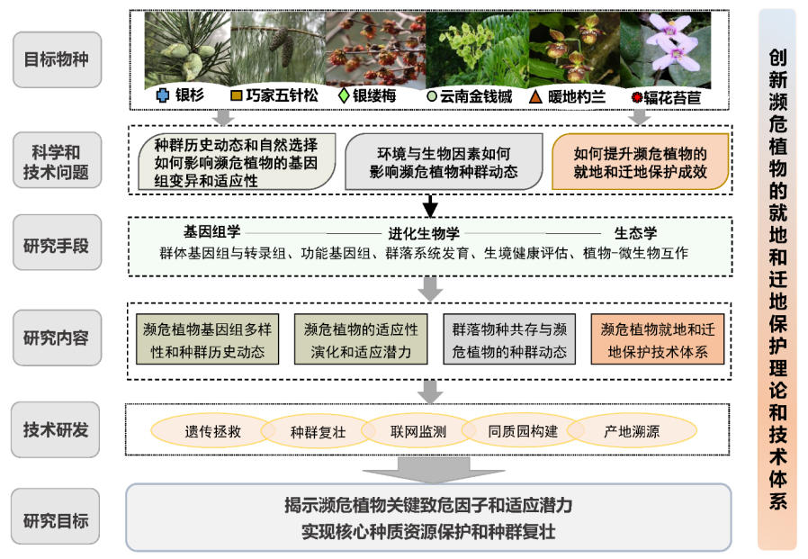
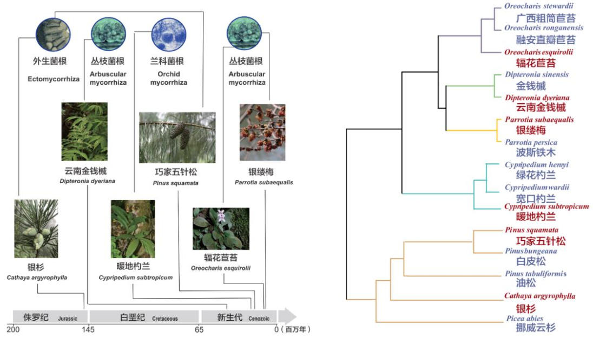
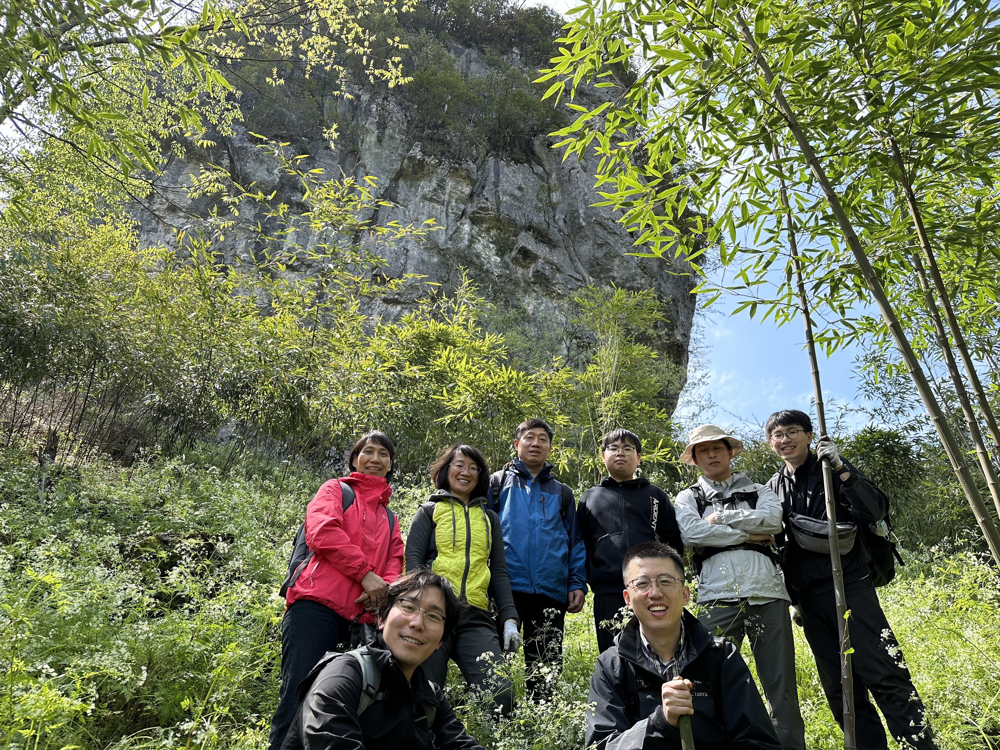

真菌群落组成
尚未选择采样点每15秒自动切换分类层级
门（Phylum）
请点击地图上的样点查看群落组成

我国亚热带及周边地区是北半球最重要的植物避难所，保存了大量特有和孑遗植物。由于环境变化和人类活动，很多植物面临灭绝威胁，其丧失将对生物多样性格局和生态系统功能产生重大影响。从适应性进化的角度看，遗传因素是导致植物濒危最本质的内因，气候变化和人类活动引起的生境改变是植物濒危的外因，但在当前全球气候变化情景下，生态因子和群落结构等的剧烈变化可能先于遗传因素导致物种濒危乃至灭绝。由于对植物濒危的遗传学和生态学机制及二者的相互作用缺乏系统研究，濒危植物保护及成效的提升面临一系列的理论和技术瓶颈，亟需整合进化生物学、基因组学、生态学等多学科方法，从分子到生态系统水平解析植物濒危的机制，揭示其适应潜力，创新就地和迁地保护技术。
针对珍稀濒危植物及小种群保育的基础理论和技术瓶颈，从群体基因组、群落系统发育多样性、生物互作、环境适应性等角度，对具有不同进化历史、生境和习性的代表性濒危植物开展研究，解析其濒危的遗传学和生态学机制，揭示关键致危因子，研发解濒的关键技术；建立“致濒机制研究-保育技术研发-种群恢复/复壮示范” 科技创新链，打造濒危植物保护新模式。
选择银杉、巧家五针松、银缕梅、云南金钱槭、暖地杓兰和辐花苣苔6种分布于我国亚热带及周边地区极具代表性的濒危植物，研究其基因组多样性和变异模式、适应潜力、种群历史动态等，阐明其种群衰退的遗传学机制；评估濒危植物生境的原真性和完整性，解析群落系统发育多样性格局变化，阐明菌根真菌等关键微生物类群对濒危植物种群动态的影响，揭示植物濒危的生态学机制；开展基于生境重建和遗传拯救的种群复壮技术研发，建立濒危植物核心种质库、种群动态联网监测平台及保育与复壮示范基地。

银杉，国家一级保护野生植物，松科银杉属的唯一现存物种。拉丁属名Cathaya与“华夏”同义，种名argyrophylla意为“银色的叶”，因其两条银白色的气孔带宽大耀目。
银杉是古老的中生代孑遗植物，化石证据表明，在晚白垩世至更新世期间，银杉属曾在北半球广泛分布。经历了白垩纪—古近纪大灭绝、始新世—渐新世之交全球气候由“温室”到“冷室”的转换、第四纪冰期等重大事件，银杉在大部分分布区域相继灭绝。直到1938年，杨衔晋在现今的重庆金佛山考察采集树木标本，存活下来的银杉才第一次被发现。1955年到1956年间，钟济新在现今的花坪国家级自然保护区内采集到了银杉的标本，并在1958年由陈焕镛和匡可任发表。经郑万钧与傅立国的提议与再次考证，1962年，陈焕镛和匡可任将采自金佛山的银杉标本与花坪标本归为一种，将银杉这一物种正式发表。
银杉的系统位置曾存在极大的争议，直到20世纪末分子系统学方法的引入才揭示出该属与松属和云杉属的近缘关系，后来谱系转录组分析进一步表明该属是松属的姐妹群。银杉属的起源时间介于早白垩世与中侏罗世，距今约1.4亿年前。同为中生代起源的松属现广泛分布于北半球，有110余种。而现存的野生银杉仅孤立地分布在我国大娄山、越城岭、八面山和大瑶山四个分布区、五大种群，且近40年间种群规模明显缩小，现存个体约为1810株（毛宗铮在1989年统计为3200余株）。
银杉是典型的外生菌根植物，通过将光合产物输送给共生的外生菌根真菌以获取氮、磷、水分等资源。银杉的原生境凋落物层厚、土壤浅薄，且有机质含量高、养分可获得性低，银杉可能依赖一些外生菌根真菌从有机质中为数不多的养分。现有研究认为，此类外生菌根真菌对植物宿主的碳需求高。而银杉的生长速度极慢，已有的解析木资料表明银杉平均年树高生长量仅为10.4厘米，故银杉难以与周围的乔木竞争，尤其是速生物种和一些阔叶物种。光竞争被广泛认为是银杉原生境中最为关键的限制因子。基于这些证据，我们推测竞争与光照可能是影响银杉与外生菌根真菌相互作用的关键因素，进而影响银杉的养分获取、生长、繁殖与种群扩散。在本项目中，我们使用激光雷达技术量化银杉个体受到的竞争及其光照获取能力，使用高通量测序技术剖析关键外生菌根真菌及土壤微生物群落，并结合银杉叶片、根系、凋落物、土壤理化性质、气候等指标测定，通过大数据分析及结构化统计分析证明了这一假设。论文已投稿至研究领域内的顶级期刊。

针对本项目包含的6种濒危植物（银杉、巧家五针松、银缕梅、云南金钱槭、暖地杓兰和辐花苣苔），使用高通量扩增子测序对这6种濒危植物的原生境土壤微生物群落（以真菌和细菌为主）进行剖析。其中，银杉样品由植物研究所高雨轩、莫冰棋等人采集，巧家五针松样品由昆明植物研究所舒恒、高雨轩、浙江大学张子睿等人采集，银缕梅样品由金寨郑学成提供，云南金钱槭样品由湖北大学黄岚杰等人采集，暖地杓兰样品由植物研究所金效华提供，辐花苣苔样品由植物研究所胡鸿森采集。
使用FastDNA SPIN Kit for Soil试剂盒从超低温保存的土壤中提取DNA。针对银杉、巧家五针松、银缕梅、云南金钱槭和辐花苣苔的土壤真菌群落，使用5.8S-Fun (5’-AACTTTYRRCAAYGGATCWCT-3’)和ITS4-Fun (5’-AGCCTCCGCTTATTGATATGCTTAART-3’)引物组合对ITS2区域进行PCR，针对暖地杓兰的土壤真菌群落，使用ITS3 (5’-GCATCGATGAAGAACGCAGC-3’)和 ITS4OF (5’-GTTACTAGGGGAATCCTTGTT-3’) 引物进行PCR。相比于普通引物组合（如5.8S-Fun/ITS4-Fun），ITS3/ITS4OF引物组合是针对兰科菌根真菌（尤其是胶膜菌科和角担菌科真菌）所设计的，可以更好的检测出土壤中的兰科菌根真菌。针对6种濒危植物的土壤细菌群落，使用被全球广泛使用的515F/806R引物组合对16S rRNA基因的V4片段进行PCR。PCR产物回收、纯化、建库后使用Illumina NovaSeq平台进行双端测序。
使用 PipeCraft 2 对拆分样本后的双端 ITS 测序数据进行生物信息学分析。首先，利用 VSEARCH 合并双端序列，要求最小重叠长度为 20 bp。随后，使用 Cutadapt 去除引物序列，仅保留具有正确配对引物的序列。采用 VSEARCH 进行质量过滤，将最大预期错误数设为 1，并去除含有模糊碱基的序列。接着，使用 ITSxpress 提取真菌 ITS2 区域。利用 UCHIME 结合从头检测和基于参考数据库的检测两种模式，识别并去除潜在的嵌合体序列，其中参考数据库为 UNITE UCHIME（版本 16.10.2022）。使用 VSEARCH 将剩余序列按照 97% 的序列相似性阈值聚类为操作分类单元（OTUs），并去除仅包含一条序列的 OTU（singletons）。最后，利用 BLASTn 与 UNITE 数据库（版本 02.19.2025）进行序列比对和分类学注释，设置 E-value 阈值为 1 × 10−50，word size 为 9。
使用 QIIME 2 对拆分样本后的双端 16S rRNA 基因测序数据进行生物信息学分析。首先，使用 Cutadapt 去除引物序列，并丢弃不含预期引物序列的测序 reads。随后，利用 DADA2 对剩余序列进行去噪、去冗余和嵌合体过滤，最终获得扩增子序列变体（Amplicon Sequence Variants，ASVs）。最后，使用 QIIME 2 中的 q2-feature-classifier 插件，基于针对 V4 区域训练的 SILVA Release 138.1 参考数据库，对质控后的 ASVs 进行分类学注释。
在本微生物信息数据平台中，我们将展示这6种濒危植物在每个采样点的真菌与细菌群落组成。

在地图上选择采样点，查看物种、地名及微生物群落信息。
每15秒自动切换分类层级
请点击地图上的样点查看群落组成
每15秒自动切换分类层级
请点击地图上的样点查看群落组成
银杉，国家一级保护野生植物，松科银杉属的唯一现存物种。拉丁属名Cathaya与“华夏”同义，种名argyrophylla意为“银色的叶”，因其两条银白色的气孔带宽大耀目。
银杉是古老的中生代孑遗植物，化石证据表明，在晚白垩世至更新世期间，银杉属曾在北半球广泛分布。经历了白垩纪—古近纪大灭绝、始新世—渐新世之交全球气候由“温室”到“冷室”的转换、第四纪冰期等重大事件，银杉在大部分分布区域相继灭绝。直到1938年，杨衔晋在现今的重庆金佛山考察采集树木标本，存活下来的银杉才第一次被发现。1955年到1956年间，钟济新在现今的花坪国家级自然保护区内采集到了银杉的标本，并在1958年由陈焕镛和匡可任发表。经郑万钧与傅立国的提议与再次考证，1962年，陈焕镛和匡可任将采自金佛山的银杉标本与花坪标本归为一种，将银杉这一物种正式发表。
银杉的系统位置曾存在极大的争议，直到20世纪末分子系统学方法的引入才揭示出该属与松属和云杉属的近缘关系，后来谱系转录组分析进一步表明该属是松属的姐妹群。银杉属的起源时间介于早白垩世与中侏罗世，距今约1.4亿年前。同为中生代起源的松属现广泛分布于北半球，有110余种。而现存的野生银杉仅孤立地分布在我国大娄山、越城岭、八面山和大瑶山四个分布区、五大种群，且近40年间种群规模明显缩小，现存个体约为1810株（毛宗铮在1989年统计为3200余株）。
银杉是典型的外生菌根植物，通过将光合产物输送给共生的外生菌根真菌以获取氮、磷、水分等资源。银杉的原生境凋落物层厚、土壤浅薄，且有机质含量高、养分可获得性低，银杉可能依赖一些外生菌根真菌从有机质中为数不多的养分。现有研究认为，此类外生菌根真菌对植物宿主的碳需求高。而银杉的生长速度极慢，已有的解析木资料表明银杉平均年树高生长量仅为10.4厘米，故银杉难以与周围的乔木竞争，尤其是速生物种和一些阔叶物种。光竞争被广泛认为是银杉原生境中最为关键的限制因子。基于这些证据，我们推测竞争与光照可能是影响银杉与外生菌根真菌相互作用的关键因素，进而影响银杉的养分获取、生长、繁殖与种群扩散。在本项目中，我们使用激光雷达技术量化银杉个体受到的竞争及其光照获取能力，使用高通量测序技术剖析关键外生菌根真菌及土壤微生物群落，并结合银杉叶片、根系、凋落物、土壤理化性质、气候等指标测定，通过大数据分析及结构化统计分析证明了这一假设。论文已投稿至研究领域内的顶级期刊。
巧家五针松，又名五针白皮松，国家一级保护野生植物，IUCN极危（CR）植物，是全球最濒危的100种物种之一。
分子系统学分析表明，巧家五针松属于单维管束松亚属（Subgenus Strobus）下属五针松组（Section Quinquefoliae）的西藏白皮松亚组（Subsection Gerardianae），近缘物种为白皮松和西藏白皮松。
巧家五针松只有1处野生分布点，现存野生植株35株，位于云南药山国家级自然保护区杨家湾片区，分布于云南省昭通市巧家县玉屏街道杨家湾村樟木箐（半阳坡）和中寨乡付山村徐家湾（半阴坡）同一山体相背的两个坡面上，其中樟木箐现存18株，徐家湾现存17株。现存巧家五针松野生植株平均胸径为22.5cm、平均株高为16.4m，结实25株。巧家五针松原生种群幼树数量仅占种群总数的14.3%（5株），未发现幼苗，种群结构为衰退型，种群自然更新能力较弱。其所在群落乔木上层仅有巧家五针松；乔木中层有3种植物，分别为巧家五针松、青冈、扇叶槭；乔木下层共有16种树种；而灌木层（36种）与草本层（33种）均未见巧家五针松幼苗。
经过30多年保护，巧家五针松种群规模稳步增加，目前已累计实现人工繁育8000余株，保存幼苗幼树4000余株，其中巧家县境内移植存活3000余株，昆明、楚雄、大理等不同生境地共移植存活1000余株。
松属植物是典型的外生菌根植物，巧家五针松也不例外。本项目的初步分析表明，棉革菌属真菌（Tomentella spp.）是与巧家五针松共生的关键外生菌根真菌，且对于异地种群，巧家五针松与野生种群的核心真菌组的相似性越高，其表现出的叶片性状越倾向于具有更强的资源获取能力。
银缕梅，国家一级保护野生植物，金缕梅科波斯铁木属下唯二物种（另一物种为波斯铁木）。
综合前期研究与实地调查，本项目共记录银缕梅分布点20个，其分布范围局限于豫皖交界的大别山脉及皖浙苏交界的天目山脉、仙霞岭及浙江天台山脉，涉及河南、安徽、江苏、浙江四省。银缕梅种群均分布于海拔1,100 m以下，其中大部分种群生长于山地峡谷河沟两侧，少数种群位于山顶或山腰。遥感监测与实地调查共记录银缕梅野生个体3,920株，其中成年植株（DBH > 5 cm）1,213株。按种群规模划分：小种群（< 100株）7个，包括金寨杨家河、金寨长春村、绩溪朱显村、临安浙川村、余姚棠溪村、永康大寒尖、宜兴善卷洞风景区；中等种群（100–300）10个，包括商城五里山村、金寨花娘寨、金寨黄花沟、金寨大峡谷村、岳西天峡风景区、舒城万佛山自然保护区、舒城歧岭、旌德泥鳅坞、宁波商量岗林场、宜兴林场；大种群（> 300株）3个，为岳西英山河（1,134株，成年植株230株）、绩溪水井湾山及安吉龙王山自然保护区。其中，岳西英山河种群规模最大，临安浙川村种群规模最小（4株，成年植株1株）。
银缕梅为落叶乔木，花期3月下旬至4月上旬，雌雄异熟导致传粉窗口期较短，种子自然萌发率低。且作为喜光乔木，银缕梅在落叶乔木中竞争能力偏弱，而青冈等伴生常绿树种更具竞争优势。
根据系统位置推测，银缕梅为丛枝菌根植物，可与丛枝菌根真菌共生进行提高从土壤中获取养分的能力。本项目对银缕梅原生境的土壤微生物群落进行了初步探索。
云南金钱槭，国家二级保护野生植物，IUCN濒危（EN）植物，无患子科金钱槭属下唯二植物（另一物种为金钱槭）。
云南金钱槭是具有代表性的第三纪孑遗植物，现存野生个体主要分布云南文山州老君山自然保护区，生境为海拔1800–2300米山地溪流边常绿阔叶林林缘或次生阔叶林。现存7个点，成株约2150株，主要分布在文山市坝心乡高笕槽村（约400株）、文山市坝心乡陈家寨村（约1500株，CJZ）、文山市小街镇新马房村（约70株，XMF）、文山市小街镇菖蒲塘村（约100株，CPT）、蒙自市老寨乡老寨村（约65株，LZ）、屏边县和平镇白鸽村（约10株、BGC）和麻栗坡县马街乡董浪村（约5株、MLP）。
云南金钱槭是典型的丛枝菌根植物，可与丛枝菌根真菌共生进行提高从土壤中获取养分的能力。本项目的初步研究发现云南金钱槭可能对丛枝菌根真菌的依赖性较低，丛枝菌根真菌应该不是限制云南金钱槭种群扩散的关键。
暖地杓兰，兰科杓兰属物种，为杓兰属中唯一的国家一级保护野生植物，IUCN濒危（EN）植物。
暖地杓兰是唯一分布在亚热带常绿阔叶林中杓兰属植物，因此其种名为subtropicum。暖地杓兰现存野生个体约300株，生境严重片段化，主要分布在我国墨脱、贡山、麻栗坡这3个区域。
与大多数兰科植物一样，杓兰属植物也是兰科菌根植物，在种子萌发及幼苗生长阶段依赖与之共生的兰科菌根真菌。本项目的初步研究发现胶膜菌属真菌（Tulasnella spp.）与无孢蜡壳属真菌（Serendipita spp.）是暖地杓兰共生的兰科菌根真菌。在其他杓兰属植物研究中也发现胶膜菌属真菌是关键的兰科菌根真菌。值得注意的是，Hua等人（2026）关于暖地杓兰根际微生物的研究中认为胶膜菌并不重要，这可能是因为他们的研究中未使用针对兰科菌根真菌优化后的PCR引物，从而得出了错误的结论。
此外，本项目使用单菌丝团分离法，对野生暖地杓兰根段进行菌根真菌分离。同时使用暖地杓兰成熟种子，在原生境进行萌发菌诱捕及分离。经菌株纯化及合并后，获得胶膜菌属及角担菌属等多种暖地杓兰共生真菌，并发现其中角担菌属真菌可促进暖地杓兰种子萌发，初步实现暖地杓兰的共生萌发。
辐花苣苔，苦苣苔科马铃苣苔属物种，为苦苣苔科中唯一的国家一级保护野生植物。
辐花苣苔是马铃苣苔属已知的唯一具有辐射对称花的物种，现存野生个体约5000株，分布区域非常狭窄，仅分布于贵州贞丰、安龙与兴仁交界的龙头大山州级自然保护区。
本项目研究发现辐花苣苔在野外的结实率极低（约3%左右），花形转变是导致辐花苣苔传粉者访花频率降低，结实率降低，导致辐花苣苔野外居群更替速度变慢。此外，辐花苣苔花器官发育从原基起始就呈辐射对称状，与苦苣苔科其他类群完全不同。本项目也对辐花苣苔原生境的土壤微生物群落进行了初步探究。